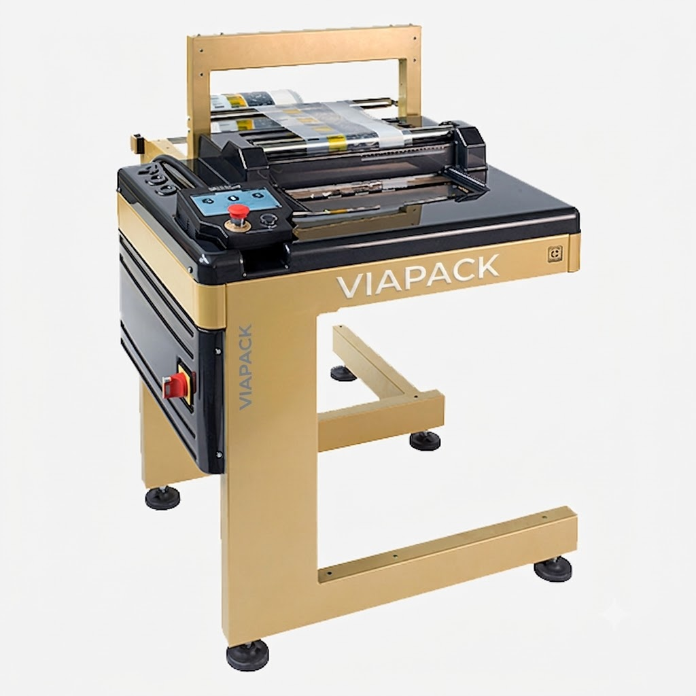
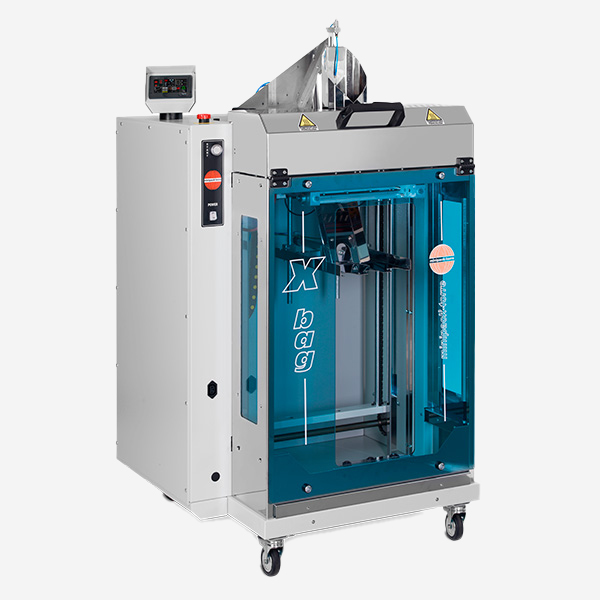
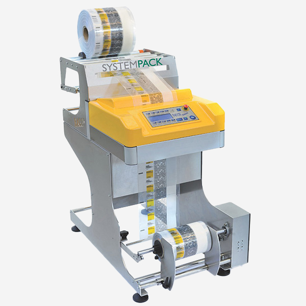
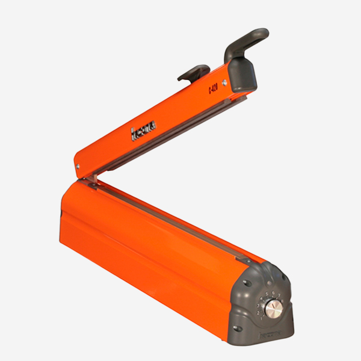
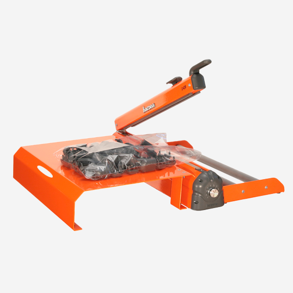
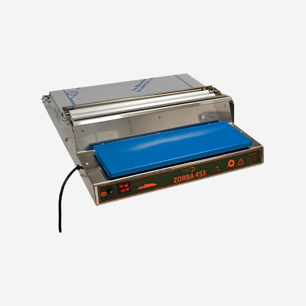

Ensacheuses verticales VFFS, horizontales HFFS et flowpack pour tous secteurs.
Nos ensacheuses couvrent tous les besoins de conditionnement en sachets : alimentaire, pharmaceutique, cosmétique, quincaillerie. Les machines form-fill-seal forment, remplissent et scellent en une opération.

Ensacheuse verticale VFFS semi-automatique
VFFS pour produits en vrac, sachets de 100-1000g, 20-40 sachets/min, doseur volu...
Voir le produit
Ensacheuse verticale automatique
VFFS automatique, 60 sachets/min, format de sachet motorisé, doseur pondéral int...
Voir le produit
Ensacheuse horizontale HFFS
HFFS pour produits solides (savons, fromages, pièces), 30 pcs/min, film PE/OPP....
Voir le produit
Ensacheuse flowpack automatique
Flowpack haute cadence 100 produits/min, servo-motorisée, changement format rapi...
Voir le produit
Ensacheuse de sacs plats semi-auto
Sacs plats et à soufflets, ouverture-remplissage-fermeture, 15 sacs/min....
Voir le produit
Ensacheuse sacs ZIP refermables
Spéciale sachets ZIP, refermeables, idéale alimentaire haut de gamme et cosmétiq...
Voir le produit